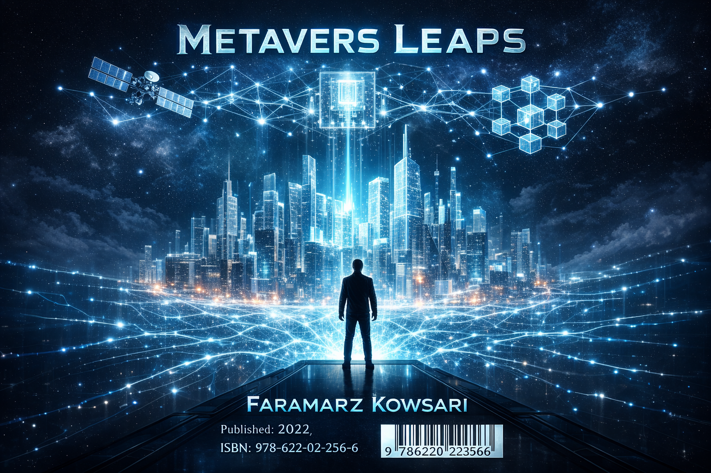

<!DOCTYPE html>
<html lang="en" dir="ltr">
<head>
    <meta charset="UTF-8">
    <meta name="viewport" content="width=device-width, initial-scale=1.0">
    <title>Metaverse Leaps - Digital Book | Faramarz Kowsari</title>
    <script src="https://cdn.tailwindcss.com"></script>
    <script src="https://unpkg.com/react@18/umd/react.production.min.js"></script>
    <script src="https://unpkg.com/react-dom@18/umd/react-dom.production.min.js"></script>
    <script src="https://unpkg.com/@babel/standalone/babel.min.js"></script>
    <link href="https://fonts.googleapis.com/css2?family=Vazirmatn:wght@100;400;700&family=Urbanist:wght@300;400;700&display=swap" rel="stylesheet">
    <style>
        :root { --accent: #deff9a; --bg: #050505; --glass: rgba(255, 255, 255, 0.03); }
        * { scroll-behavior: smooth; box-sizing: border-box; }
        body { background-color: var(--bg); color: #e5e7eb; font-family: 'Urbanist', 'Vazirmatn', sans-serif; overflow-x: hidden; }
        .glass-panel { background: var(--glass); backdrop-filter: blur(15px); border: 1px solid rgba(222, 255, 154, 0.1); }
        .gradient-text { background: linear-gradient(135deg, #deff9a 0%, #a3e635 100%); -webkit-background-clip: text; -webkit-text-fill-color: transparent; }
        .sidebar-link { transition: all 0.3s ease; }
        .sidebar-link.active { color: var(--accent); background: rgba(222, 255, 154, 0.05); }
        
        [dir="rtl"] .sidebar-link { border-right: 2px solid transparent; text-align: right; }
        [dir="rtl"] .sidebar-link.active { border-right-color: var(--accent); }
        [dir="ltr"] .sidebar-link { border-left: 2px solid transparent; text-align: left; }
        [dir="ltr"] .sidebar-link.active { border-left-color: var(--accent); }

        .page-container { max-width: 850px; margin: 0 auto; line-height: 2.2; }
        .paragraph-text { text-align: justify; margin-bottom: 2.5rem; font-weight: 300; font-size: 1.15rem; color: #d1d5db; }
        .mini-player { opacity: 0.7; transition: all 0.4s ease; }
        .mini-player:hover { opacity: 1; transform: scale(1.05); }
        .loader { border: 2px solid #f3f3f3; border-top: 2px solid var(--accent); border-radius: 50%; width: 16px; height: 16px; animation: spin 1s linear infinite; }
        @keyframes spin { 0% { transform: rotate(0deg); } 100% { transform: rotate(360deg); } }
        .custom-scroll::-webkit-scrollbar { width: 4px; }
        .custom-scroll::-webkit-scrollbar-thumb { background: var(--accent); border-radius: 10px; }
    </style>
</head>
<body>
    <div id="root"></div>

    <script type="text/babel">
        const { useState, useEffect, useRef } = React;

        // --- SVG Icons ---
        const IconDownload = () => <svg width="18" height="18" viewBox="0 0 24 24" fill="none" stroke="currentColor" strokeWidth="2" strokeLinecap="round" strokeLinejoin="round" className="inline-block mx-2"><path d="M21 15v4a2 2 0 0 1-2 2H5a2 2 0 0 1-2-2v4"/><polyline points="7 10 12 15 17 10"/><line x1="12" y1="15" x2="12" y2="3"/></svg>;
        const IconPlay = () => <svg width="20" height="20" viewBox="0 0 24 24" fill="currentColor"><polygon points="5 3 19 12 5 21 5 3"/></svg>;
        const IconPause = () => <svg width="20" height="20" viewBox="0 0 24 24" fill="currentColor"><rect x="6" y="4" width="4" height="16"/><rect x="14" y="4" width="4" height="16"/></svg>;
        const IconGlobe = () => <svg width="14" height="14" viewBox="0 0 24 24" fill="none" stroke="currentColor" strokeWidth="2"><circle cx="12" cy="12" r="10"/><line x1="2" y1="12" x2="22" y2="12"/><path d="M12 2a15.3 15.3 0 0 1 4 10 15.3 15.3 0 0 1-4 10 15.3 15.3 0 0 1-4-10 15.3 15.3 0 0 1 4-10z"/></svg>;
        const IconLinkedin = () => <svg width="14" height="14" viewBox="0 0 24 24" fill="currentColor"><path d="M19 0h-14c-2.761 0-5 2.239-5 5v14c0 2.761 2.239 5 5 5h14c2.762 0 5-2.239 5-5v-14c0-2.761-2.238-5-5-5zm-11 19h-3v-11h3v11zm-1.5-12.268c-.966 0-1.75-.79-1.75-1.764s.784-1.764 1.75-1.764 1.75.79 1.75 1.764-.783 1.764-1.75 1.764zm13.5 12.268h-3v-5.604c0-3.368-4-3.113-4 0v5.604h-3v-11h3v1.765c1.396-2.586 7-2.777 7 2.476v6.759z"/></svg>;
        const IconMail = () => <svg width="14" height="14" viewBox="0 0 24 24" fill="none" stroke="currentColor" strokeWidth="2"><path d="M4 4h16c1.1 0 2 .9 2 2v12c0 1.1-.9 2-2 2H4c-1.1 0-2-.9-2-2V6c0-1.1.9-2 2-2z"/><polyline points="22,6 12,13 2,6"/></svg>;

        const bookData = {
            en: {
                dir: "ltr",
                pdf: "Metavers_Leaps_Brief_Book -English1.pdf",
                title: "Technological Leaps in the Metaverse",
                author: "Faramarz Kowsari",
                download: "Download PDF (EN)",
                authorLabel: "About Author",
                chapters: [
                    { id: "ch1", title: "1. Philosophy of Presence", paragraphs: [
                        "The concept of presence in the Metaverse represents a fundamental ontological shift that transcends the limitations of traditional telecommunications and virtual reality simulation. In this new paradigm, presence is not merely a psychological state of feeling there but a functional integration of the self into a complex digital ecosystem. This transition requires us to reconsider the Cartesian distinction between mind and matter as the virtual plane provides a logically consistent framework. The biological brain, through its inherent plasticity, begins to treat synthetic stimuli as primary data points for environmental mapping and navigation. Consequently, the boundary between the physical body and the digital avatar starts to dissolve at the neural level for the observer. We are witnessing the emergence of a post-geographic human condition where the concept of locality is defined by network topology. This shift necessitates a new epistemology that values the authenticity of interaction over the medium of transmission in daily life. The subjective experience of qualia in virtual spaces becomes indistinguishable from physical reality as sensory feedback loops reach millisecond precision. We must acknowledge that the Metaverse is not an escape from reality but a purposeful expansion of the human existential territory. Presence, therefore, is the cognitive glue that binds our disparate experiences into a unified sense of self across both domains.",
                        "The second phase of this philosophical evolution centers on the temporal nature of digital existence and the spatialization of memory in 3D. In the physical world, time is a linear progression characterized by the irreversible decay of matter and the fading of events. In the Metaverse, every action is recorded in a persistent ledger, transforming the past into a navigable architectural space for everyone. This allows for a simultaneity of experience where multiple historical or speculative contexts can exist within a single synchronized environment. The human relationship with the moment is thus fundamentally altered, moving from a transient occurrence to a persistent data point. Such a shift requires a new framework for understanding the concept of a life well-lived in an era of digital eternity. We must grapple with the psychological implications of living in an environment devoid of traditional entropy, where beauty is static. This leads to the question of whether the human spirit requires struggle and decay to find true meaning and purpose. Artificially introducing narrative friction and digital entropy into these worlds is a way to ground our experiences in a familiar reality. Yet, the real technological leap lies in embracing the unique logic of the digital plane as a valid form of reality. This acceptance marks the transition from the imitation phase of technology to the creation phase of the new human species.",
                        "Thirdly, the philosophy of presence must address the collective nature of reality-building and the emergence of inter-subjective consensus through technology. In the physical world, reality is largely a given, dictated by the laws of physics and the consensus of biological senses. In the Metaverse, reality is a collaborative construct that can be modified, shared, and negotiated in real-time by the users. This creates a dynamic reality where the collective will of a community can alter the physical laws of their shared environment. Such power requires a new social contract that prioritizes the preservation of shared truth over individual convenience or profit. We must be wary of the fragmentation of reality into epistemic bubbles where different groups live in logically incompatible universes. The open Metaverse depends on interoperable protocols that ensure a consistent baseline of experience for all its global inhabitants. This consistency is essential for fostering trust and empathy across the digital divide that currently exists in our world. We must treat high-fidelity presence as a fundamental human right, ensuring that no one is excluded based on their status. The democratization of the ideal allows for a global meritocracy where the most innovative minds can shape the digital reality. Ultimately, the philosophy of presence is about the integration of the human reach with the infinite possibilities of the void."
                    ]},
                    { id: "ch2", title: "2. Generative AI", paragraphs: ["AI is the digital architect that builds trillions of cubic meters of navigable virtual space effortlessly for billions of users. It interpret human natural language into complex 3D structures, making world-building accessible to non-technical individuals in the upcoming global digital era. Neural networks simulate the laws of physics and the aesthetics of light to create environments indistinguishable from physical reality for the mind. This transition marks the end of manual modeling and the beginning of agentic creation where environments are dynamic and ever-changing. Generative AI manages the consistency of the world's social and physical fabric across synchronized server instances in the global cloud. It populates these vast spaces with intelligent NPCs that can learn from user interactions and evolve their own behaviors over time. Content creation at scale becomes a solved problem, allowing the human imagination to become the only real constraint in production. Security and moderation in these 3D spaces are handled by real-time AI agents that detect harmful patterns and anomalies. The fusion of AI and Metaverse is not a choice but a technical necessity for a persistent and functional ecosystem. Ultimately, AI empowers every citizen of the Metaverse to be an architect of their own unique and personalized universe."] },
                    { id: "ch3", title: "3. BCI Leap", paragraphs: ["Brain-Computer Interfaces represent the ultimate frontier of human immersion by bypassing the biological limitations of our natural sense organs. Current VR is constrained by the bandwidth of eyes and ears, but BCI injects data directly into the neural pathways. This technology achieves the 'feeling of reality' by creating direct neural resonance that is indistinguishable from physical sensations for the brain. We are moving from external displays to internal experiences where the mind and the machine operate as a single cognitive unit. High-density micro-electrode arrays and optogenetics allow for surgical precision in targeting specific clusters of neurons for deep sensory injection. Non-invasive wearable versions are being developed to bring this sensory leap to the mass consumer market without surgical risks. Telepathic communication becomes possible as brain signals are decoded and transmitted across the network in the form of pure concepts. Neuro-haptics provide the missing layer of physicality by simulating weight and texture directly in the somatosensory cortex of the observer. The integration of BCI with the Metaverse engages the entire human nervous system, making the digital world feel as solid as earth. This sensory revolution will redefine what it means to be human in a technologically augmented and persistent digital era."] },
                    { id: "ch4", title: "4. 6G/Edge Computing", paragraphs: ["Persistent high-fidelity Metaverse experiences depend entirely on the sub-millisecond latency and massive bandwidth provided by the future 6G network infrastructure. 6G operates at terahertz frequencies, enabling the real-time transmission of volumetric data that 5G networks simply cannot handle for billions. We are building a global nervous system that turns the entire planet into a single synchronized computational node for the Metaverse era. Intelligent resource distribution at the hardware level eliminates the lag that currently breaks immersion and causes discomfort for the users. The network becomes an invisible layer of the environment that supports our permanent digital presence across all shared virtual spaces. Edge computing moves the processing power closer to the user to solve the physical limitations of propagation delay and distance. This distributed model ensures that heavy rendering and AI calculations happen locally, providing an instantaneous response for the biological senses. Smart edge nodes predict user behavior and prepare the virtual environment before the user even takes an action in space. The convergence of hardware and high-speed networking is the key to achieving a truly persistent and seamless digital reality. Ultimately, 6G is the oxygen that the digital civilization needs to breathe and function at a global and infinite scale."] },
                    { id: "ch5", title: "5. Digital Economy", paragraphs: ["The Metaverse economy shifts from the service-rental models of Web 2 to true ownership models based on decentralized blockchain ledgers. Every digital item is recorded as a verifiably scarce asset, giving the individual complete sovereignty over their virtual property and wealth. This technological leap moves the concept of value from physical atoms to digital bits, creating a multi-trillion-dollar global market today. NFTs serve as deeds of ownership for virtual real estate, digital fashion, and unique identities that carry value across different worlds. Smart contracts automate financial agreements and royalty distributions, removing the need for traditional banking intermediaries and reducing transaction friction. We are witnessing the birth of a decentralized financial system that rewards creators directly for their contributions to the virtual world. Global liquidity flows seamlessly between interconnected platforms, enabling a unified macro-economy that is not controlled by any single corporation. New professions like virtual architects and digital lawyers are emerging to support the infrastructure of this borderless and innovative labor market. Digital labor in the Metaverse allows people to earn their living regardless of their physical location or national identity. This financial empowerment is the primary engine that will drive the mass migration of human civilization into digital dimensions."] },
                    { id: "ch6", title: "6. Fluid Identity", paragraphs: ["Fluid identity in the Metaverse allows individuals to transcend the physical limitations of their biological bodies, including age and physical abilities. This leap in self-expression enables users to inhabit multiple avatars that reflect their true inner selves or their current social aspirations. The psychology of this shift is profound as it challenges the traditional concept of a stable and unitary ego. We are becoming multi-modal beings who navigate different social and professional environments with completely different and specialized digital personas. This flexibility empowers those who feel marginalized in the physical world, offering them a new path to social success and self-realization. However, we must address the risks of psychological fragmentation and the potential for dissociation from the physical and biological reality. Avatar dysmorphia is a serious concern that requires modern therapeutic solutions as we spend more time as our ideal versions. The Proteus effect shows that our behavior is deeply influenced by the appearance of our avatar in both worlds. We must ensure that the Metaverse remains a tool for psychological empowerment rather than a permanent escape from human nature. Identity development in this era is about maintaining personal integrity across all planes of existence and through all avatars."] },
                    { id: "ch7", title: "7. Digital Ethics", paragraphs: ["A vast immersive Metaverse requires a fundamental reimagining of ethics and the establishment of new behavioral codes for 3D environments. Traditional internet ethics are insufficient for a world where harm can be physicalized through haptic feedback and neural interfaces in space. We need a Metaverse Constitution to define the fundamental rights and responsibilities of every single citizen in the virtual realm. This includes the right to bodily autonomy and protection from virtual assault, which can have real psychological impact on humans. Algorithmic bias in the AI systems that govern these worlds must be identified and removed to ensure justice for all. Transparency in AI decision-making is paramount to maintaining social cohesion and trust within the diverse digital communities of the future. We have the opportunity to build a new society from the ground up, learning from the mistakes of our past. Ethics in the Metaverse is about creating a safe and inclusive environment where human dignity is preserved at all levels. Protecting the mind from algorithmic manipulation and neuro-exploitation is the most critical moral challenge for the architects of this age. Digital ethics will be the compass that guides us through the infinite possibilities and risks of the virtual void."] },
                    { id: "ch8", title: "8. Art & Creativity", paragraphs: ["Art in the Metaverse represents a radical departure from physical media, moving toward immersive four-dimensional experiences where the viewer is part of the work. Creativity is limited only by imagination in a space where the laws of physics are entirely optional for the creative artist. We are witnessing the birth of interactive narratives that allow the audience to live inside a story and influence its end. Artists manipulate space and time as easily as a painter uses a brush, leading to the rise of synthetic art forms. Generative art, where AI acts as a co-creator, introduces new dimensions of aesthetics that were previously beyond the reach of humans. The Metaverse is a platform for the democratization of genius, connecting the most innovative minds directly to a global audience. Neural rendering provides a level of detail and emotional resonance that makes digital art as impactful as the greatest physical masterpieces. The boundaries between music, image, and architecture are melting away into a single comprehensive and synesthetic art experience for all. Art is no longer a static product but a living environment that surrounds the human soul and elevates the spirit. Every user in the Metaverse can become a creator, contributing their unique artistic voice to the global collective memory."] },
                    { id: "ch9", title: "9. Law & Sovereignty", paragraphs: ["Governance in the Metaverse requires a shift from territorial law based on land borders to algorithmic jurisdictions that handle global life. Current legal systems cannot resolve disputes occurring in a synchronized network that spans multiple physical nations and legal frameworks simultaneously today. We need international digital courts that use blockchain arbitration to provide transparent and unhackable enforcement of the virtual social contract. Code becomes law as the rules of the environment are embedded directly into the software, reducing the need for police. However, we must ensure that these automated rules are fair, auditable, and respectful of the fundamental human rights of users. Individual sovereignty must be protected against the potential for digital tyranny by large platform owners or centralized corporate entities in power. A Universal Declaration of Digital Human Rights must be accepted by all platforms to safeguard the liberty of the global inhabitants. The goal is to create a legal environment that encourages innovation while protecting the financial and personal security of users. Law in the Metaverse is the guarantor of freedom in a world that is composed entirely of connected data. We are moving toward the creation of network states that organize around shared values rather than physical geography. Digital sovereignty is the core requirement for human flourishing in the twenty-first century's persistent and unified virtual landscape."] },
                    { id: "ch10", title: "10. Final Synthesis", paragraphs: ["The Metaverse is the training ground for the final synthesis of human biology and digital intelligence, marking the Transhumanist Horizon's dawn. We are moving beyond the limitations of our carbon-based bodies toward an augmented, persistent, and digitally sovereign state of being for all. This leap involves integrating AI and BCI into the human experience to enhance our cognitive and sensory capabilities by orders. We are becoming a multi-planar species capable of existing in physical and digital realities with equal agency and conscious control. Human evolution on this path is about the infinite expansion of our potential and the crossing of all biological borders. We are learning to process information at network scale, fostering a global collective consciousness that transcends individual human limitations today. This transition requires us to rethink every concept of our existence, including life, death, work, and the nature of love. The Metaverse is the laboratory where we test these new models of post-biological existence with precision and scientific wonder for everyone. As our mental structures adapt to these synthetic worlds, a new form of Digital Humanism will inevitably emerge and flourish. Transhumanism is an invitation to take control of our evolution and build a future limited only by our own imagination. Ultimately, the synthesis of man and machine is the elevation of the human spirit to a new state of being."] }
                ]
            },
            tr: {
                dir: "ltr",
                pdf: "Metavers_Leaps_Brief_Book-Turkish.pdf",
                title: "Metaverse'de Teknolojik Sıçramalar",
                author: "Faramarz Kowsari",
                isbn: "978-622-02-2356-6",
                download: "PDF Sürümünü İndir (TR)",
                authorLabel: "Yazar Hakkında",
                chapters: [
                    { id: "ch1", title: "1. Varlık Felsefesi", paragraphs: [
                        "Metaverse'deki varlık kavramı, mevcut başa takılan ekranların basit görsel sadakatinin ötesine geçerek, insan deneyiminde derin bir ontolojik değişimi kapsar ve fiziksel gerçeklik ile dijital temsil arasındaki sınırları radikal bir biçimde zorlar. Bu yeni paradigmada varlık, sadece orada olma şeklinde geçici bir psikolojik durum değil, benliğin kendi iç mantığını zihne dayatan karmaşık, yüksek frekanslı bir dijital ekosisteme işlevsel entegrasyonudur. Bu geçiş, zihin ve madde arasındaki Kartezyen ayrımı yeniden düşünmemizi gerektirir; zira sanal düzlem, öznel deneyim için mantıksal olarak tutarlı bir çerçeve sunar. Biyolojik beyin, doğuştan gelen plastisitesi sayesinde, sentetik uyaranları çevresel haritalama için birincil veri noktaları olarak ele almaya başlar. Sonuç olarak, fiziksel beden ile dijital avatar arasındaki sınır nöral düzeyde çözülmeye başlar. Yerellik kavramının fiziksel koordinatlardan ziyade ağ topolojisi tarafından tanımlandığı coğrafya sonrası bir insanlık durumunun ortaya çıkışına tanık oluyoruz. Bu değişim, etkileşimin özgünlüğünü iletim ortamının üzerinde tutan yeni bir epistemoloji gerektirir. Sanal alanlardaki qualia veya öznel deneyim kalitesi, duyusal geri bildirim döngüleri milisaniye hassasiyetine ulaştıkça fiziksel gerçeklikten ayırt edilemez hale gelir. Metaverse'ün gerçeklikten bir kaçış değil, insan varoluşsal alanının amaçlı bir genişlemesi olduğunu kabul etmeliyiz. Dijital varlığın kalıcılığı, insan mirasına ve bilincin sürekliliğine bakmak için yeni bir mercek sunar. Bu alanlarda daha fazla zaman geçirdikçe, sosyal kimliklerimiz giderek daha akışkan ve çok düzlemli hale gelecektir. Varlık, bu nedenle, farklı deneyimlerimizi hem fiziksel hem de dijital alanlarda birleşik bir benlik duygusuna bağlayan bilişsel tutkaldır.",
                        "Bölümün ikinci aşamasında, dijital varlığın zamansal doğasını ve belleğin mekânsallaştırılmasını ele alıyoruz. Fiziksel dünyada zaman, maddenin geri dönülemez bozunması ve olayların tarihe karışmasıyla karakterize edilen doğrusal bir ilerlemedir. Metaverse'de ise her eylem kalıcı bir deftere kaydedilir ve geçmişi gezilebilir bir mimari alana dönüştürür. Bu, birden fazla tarihsel veya spekülatif bağlamın tek bir senkronize ortamda var olabileceği bir deneyim eşzamanlılığına izin verir. İnsanın an ile olan ilişkisi böylece temelden değişir; geçici bir olaydan, yeniden ziyaret edilebilen veya yeniden deneyimlenebilen kalıcı bir veri noktasına dönüşür. Böyle bir değişim, dijital ebediyet çağında anlamlı bir yaşam kavramını yeniden tanımlamak için yeni bir çerçeve gerektirir. Geleneksel entropiden yoksun, güzelliğin statik olduğu ve ölümün isteğe bağlı bir durum olduğu bir ortamda yaşamanın psikolojik sonuçlarıyla yüzleşmeliyiz. Bu da insan ruhunun gerçek anlam ve amaç bulmak için mücadele ve bozunmaya ihtiyaç duyup duymadığı sorusuna yol açar. Bu dünyalara yapay olarak anlatı sürtünmesi ve dijital entropi dahil etmek, deneyimlerimizi tanıdık bir gerçekliğe bağlamanın bir yoludur. Ancak gerçek teknolojik sıçrama, dijital düzlemin benzersiz mantığını kendi başına geçerli bir gerçeklik formu olarak kabul etmekte yatar. Bu kabul, teknolojinin taklit aşamasından yaratım aşamasına geçişini işaret eder. Artık dünyayı kopyalamıyoruz; fiziksel kıtlığın kısıtlamalarını ortadan kaldırarak onu geliştiriyoruz. Bu değişimin metafizik sonuçları derindir ve duyarlılık ile iradenin özüne dokunur. Bilgi ölçeklerini yönetmek için yeni bilişsel sezgiseller geliştireceğiz. Varlık felsefesi, dolayısıyla, bilişsel genişleme ve biyolojik sınırların aşılması felsefesidir.",
                        "Üçüncü olarak, varlık felsefesi gerçeklik inşasının kolektif doğasını ve öznelerarası fikir birliğinin ortaya çıkışını ele almalıdır. Fiziksel dünyada gerçeklik, fizik yasaları ve biyolojik duyuların konsensüsü tarafından dikte edilen büyük ölçüde verili bir durumdur. Metaverse'de gerçeklik, gerçek zamanlı olarak değiştirilebilen, paylaşılan ve müzekere edilebilen iş birliğine dayalı bir kurgudur. Bu, bir topluluğun kolektif iradesinin paylaşılan ortamların fiziksel yasalarını değiştirebileceği bir dinamik gerçeklik yaratır. Böyle bir güç, paylaşılan gerçeğin korunmasını bireysel rahatlığın üzerinde tutan yeni bir toplumsal sözleşme gerektirir. Farklı grupların mantıksal olarak uyumsuz evrenlerde yaşadığı epistemik izolasyon balonlarına bölünmüş gerçeklik konusunda dikkatli olmalıyız. Açık Metaverse, tüm sakinler için tutarlı bir deneyim temeli sağlayan birlikte çalışabilir protokollere dayanır. Bu tutarlılık, dijital uçurumun ötesinde güven ve empati kurmak için esastır. Yüksek sadakatli varlığı temel bir insan hakkı olarak görmeli ve kimsenin fiziksel konumu veya ekonomik durumu nedeniyle dışlanmamasını sağlamalıyız. İdeal olanın demokratikleşmesi, en yenilikçi zihinlerin fiziksel zenginliklerinden bağımsız olarak gerçekliği şekillendirebildiği bir sisteme izin verir. Ancak bu yaratıcı özgürlük, dijital toplumun kolektif psikolojik sağlığına karşı bir sorumlulukla dengelenmelidir. Metaverse, en yüksek aspirasyonlarımızı yansıtan bir aynadır ve biz hangi versiyonumuzu sonsuzluğa yansıtacağımızı seçmeliyiz. Doğa ve yapaylık arasındaki denge, bu sanal ekosistemlerin sürdürülebilirliği için hayatidir. İnsan bilinci, bu ortak kurguda kendini bulurken, aslında evrensel bir anlayışın parçası haline gelmektedir. Sonuç olarak varlık felsefesi, insan erişiminin dijital boşluğun sonsuz olanaklarıyla bütünleşmesi hakkındadır."
                    ]},
                    { id: "ch2", title: "2. Dijital Mimar", paragraphs: ["Yapay zeka Metaverse'ün birincil mimarı olarak milyarlarca kullanıcı için sonsuz ve duyarlı ortamlar inşa eder. Doğal dili karmaşık 3D yapılara dönüştürerek dünya inşasını teknik bilgisi olmayan bireyler için bile erişilebilir kılar. Sinir ağları fizik yasalarını ve ışık estetiğini simüle ederek zihin için gerçeklikten ayırt edilemez alanlar yaratır. Bu teknolojik sıçrama içerik üretimindeki engelleri kaldırarak her bireyi usta bir mimara dönüştürmektedir. AI Metaverse içerisindeki sosyal ve yapısal bütünlüğü senkronize sunucular üzerinden gerçek zamanlı olarak yönetir. Akıllı NPC'ler kullanıcılarla etkileşime girerek kendi davranışlarını geliştirir ve dünyayı daha canlı bir hale getirirler. İçerik üretim maliyetleri AI sayesinde dramatik şekilde düşerken yaratıcılık tek gerçek kısıt haline gelmektedir. Güvenlik katmanında AI kötü niyetli davranışları anında tespit ederek sanal toplumun huzurunu ve istikrarını korur. Metaverse ve yapay zeka entegrasyonu fonksiyonel bir ekosistem için teknik bir tercih değil zorunluluktur. Sonuç olarak her Metaverse sakini kendi kişiselleştirilmiş evreninin tasarımcısı ve hükümdarı olma şansına sahiptir."] },
                    { id: "ch3", title: "3. BCI Sıçraması", paragraphs: ["Beyin-Bilgisayar Arayüzleri (BCI) biyolojik sınırları aşarak insan daldırmasının nihai sınırını ve yeni varoluş düzeyini temsil eder. Mevcut VR sistemleri göz ve kulak bant genişliğiyle sınırlıdır ancak BCI veriyi doğrudan sinir sistemine aktarır. Bu teknoloji doğrudan nöral rezonans yaratarak gerçeklik hissini biyolojik olarak beynin her hücresinde üretir. Zihin ve makinenin tek bir bilişsel birim olarak çalıştığı bu yeni dönemde dış ekranlara ihtiyaç kalmayacaktır. Yüksek yoğunluklu elektrot dizileri ve optogenetik yöntemler nöron kümelerini cerrahi bir hassasiyetle hedefleyerek veri işler. Giyilebilir ve invaziv olmayan modeller bu duyusal sıçramayı ameliyat riski olmadan geniş kitlelere ulaştıracaktır. Nöral sinyallerin ağ üzerinden iletilmesiyle kullanıcılar arasında doğrudan ve kelimesiz telepatik bir iletişim kurulacaktır. Nöro-haptikler somatosensoriyel kortekste ağırlık ve doku hissini simüle ederek sanal nesnelere gerçek bir fiziksellik kazandırır. Metaverse ile bütünleşen BCI tüm insan sinir sistemini meşgul ederek dijital dünyayı toprak kadar gerçek kılar. Bu duyusal devrim teknolojik olarak artırılmış bir tür olarak insan tanımını kökten ve sonsuza dek değiştirecektir."] },
                    { id: "ch4", title: "4. 6G ve Uç Bilişim", paragraphs: ["Kalıcı ve yüksek sadakatli Metaverse deneyimleri tamamen geleceğin 6G ağ altyapısının sağladığı milisaniye altı gecikmeye bağlıdır. 6G teraherz frekanslarında çalışarak 5G'nin işleyemediği devasa hacimsel verilerin milyarlarca kişiye aynı anda iletilmesini sağlar. Gezegeni tek bir senkronize hesaplama nüduna dönüştüren küresel bir sinir sistemi Metaverse çağının kalbidir. Donanım seviyesindeki akıllı kaynak dağıtımı daldırmayı bozan ve kullanıcıyı rahatsız eden gecikmeleri tamamen ortadan kaldırır. Ağ artık görünmez bir çevresel katman olarak kalıcı dijital varlığımızı her türlü sanal mekanda destekler. Uç bilişim işlem gücünü kullanıcıya yaklaştırarak fiziksel mesafeden kaynaklanan yayılım gecikmesi sorunlarını kökten çözer. Bu dağıtık model ağır grafik ve AI hesaplamalarının yerel olarak yapılmasını sağlayarak biyolojik duyulara anlık yanıt verir. Akıllı uç nüdlar kullanıcı eylemlerini tahmin ederek sanal ortamı kullanıcı oraya girmeden önce hazırlar. Donanım ve yüksek hızlı ağların birleşimi kesintisiz bir dijital gerçekliğe ulaşmanın yegane anahtarı ve temelidir. Sonuç olarak 6G dijital medeniyetin küresel ve sonsuz bir ölçekte nefes alıp işleyebilmesi için gereken oksijendir."] },
                    { id: "ch5", title: "5. Metaverse Ekonomisi", paragraphs: ["Metaverse ekonomisi Web 2'nin hizmet kiralama modellerinden merkeziyetsiz blok zinciri temelli gerçek mülkiyet modellerine geçmektedir. Her dijital öğe doğrulanabilir şekilde kıt bir varlık olarak kaydedilerek bireye sanal serveti üzerinde tam egemenlik verir. Değer kavramının atomlardan bitlere taşınması trilyonlarca dolarlık devasa bir küresel pazarın kapılarını aralamaktadır. NFT'ler sanal arsa ve dijital moda gibi varlıklar için dünyalar arası geçerliliği olan resmi mülkiyet belgeleridir. Akıllı sözleşmeler banka aracılarına ihtiyaç duymadan finansal anlaşmaları otomatikleştirerek işlem maliyetlerini ve sürtünmeyi düşürür. Yaratıcıları doğrudan ödüllendiren merkeziyetsiz bir finansal sistemin doğuşu sanal dünyada büyük bir inovasyon tetikler. Küresel likidite birbirine bağlı platformlar arasında sorunsuz akar ve tek bir şirketin kontrolünde olmayan bir makroekonomi oluşturur. Sanal mimarlar ve dijital hukukçular gibi yeni meslekler sınır tanımayan bu yenilikçi iş gücü piyasasında yerini alır. Metaverse'deki dijital emek insanların fiziksel konumlarından bağımsız olarak geçimlerini sağlamalarına ve gelişmelerine olanak tanır. Bu finansal güçlenme insan medeniyetinin dijital boyutlara kitlesel göçünü sürükleyecek olan temel ve en güçlü motordur."] },
                    { id: "ch6", title: "6. Akışkan Kimlik", paragraphs: ["Metaverse'deki akışkan kimlik bireylerin biyolojik bedenlerinin yaş ve fiziksel engel gibi sınırlamalarını tamamen aşmasına izin verir. Bu öz-ifade sıçraması kullanıcıların iç dünyalarını veya sosyal ideallerini yansıtan çok sayıda avatar kullanmasını sağlar. Kişiliğin sabit ve tekil bir yapı olduğu inancını sarsan bu değişim insan psikolojisi üzerinde derin etkiler bırakır. Farklı sosyal ve profesyonel ortamlar için farklı dijital personalar geliştiren çok modlu varlıklar haline gelmekteyiz. Fiziksel dünyada kısıtlanmış hissedenler için bu esneklik yeni bir sosyal başarı ve kendini gerçekleştirme yolu açar. Ancak uzun vadede benlik parçalanması ve gerçeklikten kopuş gibi psikolojik risklerin dikkatle yönetilmesi gerekir. İdealize edilmiş versiyonlarımızla çok vakit geçirdikçe ortaya çıkabilecek avatar dismorfisi modern bir sağlık sorunudur. Proteus etkisi avatarımızın görünümünün her iki dünyadaki davranışlarımızı ne kadar derinden etkilediğini bilimsel olarak kanıtlar. Metaverse'in insan doğasından kalıcı bir kaçış değil psikolojik güçlenme için bir araç olarak kalmasını sağlamalıyız. Bu çağda kimlik gelişimi tüm avatarlar ve varoluş düzlemleri arasında kişisel bir bütünlüğü ve dengeyi korumaktır."] },
                    { id: "ch7", title: "7. Dijital Etik", paragraphs: ["Kapsamlı bir Metaverse için etiğin temelden yeniden düşünülmesi ve 3D ortamlar için yeni davranış kodları gerekir. Geleneksel internet etiği zararın fiziksel olarak hissedilebildiği bir dünyada güvenlik sağlamak için artık yeterli değildir. Her dijital vatandaşın temel hak ve sorumluluklarını belirleyen bir Metaverse Anayasası oluşturulması medeniyet için şarttır. Bedensel özerklik hakkı ve sanal saldırılardan korunma bu anayasanın en temel ve vazgeçilmez maddeleri arasında yer almalıdır. Dünyayı yöneten AI sistemlerindeki algoritmik önyargılar herkes için adaleti sağlamak adına titizlikle temizlenmelidir. Yapay zeka karar alma süreçlerindeki şeffaflık dijital topluluklarda güveni ve sosyal uyumu korumanın tek yoludur. Geçmişin hatalarından ders alarak yeni bir toplumu adalet ve insan onuru temelleri üzerine sıfırdan inşa edebiliriz. Metaverse etiği insan haklarının her seviyede korunduğu güvenli ve kapsayıcı bir ekosistem yaratmakla ilgilidir. Zihnin algoritmik manipülasyondan korunması bu çağın mimarları için en kritik ahlaki ve profesyonel meydan okumadır. Dijital etik sonsuz olasılıklar ve risklerle dolu olan sanal boşlukta yolumuzu bulmamızı sağlayacak yegane pusuladır."] },
                    { id: "ch8", title: "8. Sanat ve Yaratıcılık", paragraphs: ["Metaverse'deki sanat fiziksel medyanın sınırlarını aşarak izleyicinin eserin bir parçası olduğu dört boyutlu deneyimlere dönüşür. Fizik yasalarının isteğe bağlı olduğu yaratıcı bir sanatçı için hayal gücü artık üretimdeki tek gerçek sınırdır. İzleyicinin hikayenin içinde yaşadığı ve sonucu değiştirebildiği interaktif anlatıların doğuşuna büyük bir heyecanla tanık oluyoruz. Alan ve zamanı bir ressamın fırçası kadar kolay yönetebilen sanatçılar sentetik sanat formlarının yükselişini sağlar. Yapay zekanın eş-yaratıcı olduğu üretken sanat insan kapasitesinin ötesinde yeni estetik boyutlar keşfetmemize imkan verir. Metaverse dehanın demokratikleştiği bir platform olup en yenilikçi zihinleri doğrudan küresel bir izleyici kitlesine bağlar. Nöral rendeleme dijital sanatı duygusal olarak en az fiziksel şaheserler kadar güçlü ve kalıcı bir hale verir. Müzik resim ve mimari arasındaki sınırların eridiği kapsamlı ve sinestezik bir sanat deneyimi çağına resmen giriyoruz. Sanat artık durağan bir ürün değil insan ruhunu sarmalayan ve onu yücelten canlı bir dijital ortamdır. Her kullanıcı Metaverse'de bir yaratıcıya dönüşerek kendi sanatsal sesini küresel kolektif hafızaya özgürce kaydedebilir."] },
                    { id: "ch9", title: "9. Hukuk ve Egemenlik", paragraphs: ["Metaverse yönetişimi toprak temelli hukuktan herkes için geçerli olan algoritmik hukuk alanlarına geçişi zorunlu kılar. Mevcut yasalar fiziksel sınırları aşan ağ uyuşmazlıklarını ve karmaşık mülkiyet sorunlarını çözmekte etkisiz kalmaktadır. Blok zinciri tahkimini kullanarak şeffaf ve hacklenemez bir yasal uygulama sağlayan uluslararası dijital mahkemelere muhtacız. Kuralların yazılıma gömüldüğü ve yasaların kod olarak işlediği bu düzende fiziksel polis ihtiyacı minimuma inecektir. Ancak bu otomatik kuralların adil olması ve temel insan haklarına tam saygı göstermesi medeniyetin geleceği için şarttır. Bireyin egemenliği platform sahiplerinin dijital zorbalığına ve merkezi kurumsal baskılara karşı yasalarla korunmalıdır. Evrensel Dijital İnsan Hakları Bildirgesi'nin tüm platformlarca kabul edilmesi küresel bir özgürlük güvencesi sağlayacaktır. Amacımız inovasyonu teşvik ederken kullanıcıların finansal ve kişisel güvenliğini her koşulda koruyan bir yasal ortamdır. Metaverse hukuku veriden oluşan bir dünyada hürriyetin en güçlü ve sarsılmaz teminatı olarak işlev görecektir. Coğrafya yerine paylaşılan değerler etrafında örgütlenen ağ devletlerinin kuruluşu yeni bir toplumsal düzen vaat eder. Dijital egemenlik yirmi birinci yüzyılın kalıcı sanal dünyalarında insan gelişimi için temel bir şarttır."] },
                    { id: "ch10", title: "10. Final Sentezi", paragraphs: ["Metaverse sadece bir destinasyon değil biyoloji ve dijital zekanın nihai sentezi için kurulan bir eğitim alanıdır. Karbon bazlı bedenlerimizin dar sınırlarını aşarak artırılmış ve dijital olarak egemen bir varlık durumuna doğru ilerliyoruz. AI ve BCI sistemlerinin entegrasyonu bilişsel yeteneklerimizi kat kat artırarak insan potansiyelini sonsuzluğa ulaştırır. Hem fiziksel hem de dijital gerçeklikte aynı iradeyle var olabilen çok düzlemli bir tür haline gelmekteyiz. Bu yoldaki evrimimiz hayatta kalmanın ötesinde evrensel bir kolektif bilincin ve anlayışın inşasıyla ilgilidir. Yaşam ölüm iş ve sevgi gibi varoluşun tüm temel kavramlarını ebediyet bağlamında yeniden düşünmek zorundayız. Metaverse yeni biyoloji sonrası modelleri bilimsel bir merakla test ettiğimiz devasa ve heyecan verici bir laboratuvardır. Zihinsel yapılarımız bu sentetik dünyalara uyum sağladıkça yeni bir Dijital Hümanizm akımı doğacak ve büyüyecektir. Evrimin bilgelikle ve tüm duyarlılığın serpilip gelişmesine olan bağlılıkla yönetilmesi tek kurtuluş yolumuzdur. Transhümanist ufuk kendi evrimimizin kontrolünü ele almaya ve hayal gücümüzle sınırlı şanlı bir gelecek kurmaya davettir. Sentez artık bir tercih değil türümüzün kaçınılmaz ve görkemli kaderi olarak karşımızda durmaktadır."] }
                ]
            },
            fa: {
                dir: "rtl",
                langCode: "fa",
                pdf: "Metavers_Leaps_Brief_Book -Persian.pdf",
                title: "جهش‌های فناوری در متاورس",
                author: "فرامرز کوثری",
                isbn: "۹۷۸-۶۲۲-۰۲-۲۳۵۶-۶",
                download: "دریافت PDF فارسی",
                authorLabel: "درباره نویسنده",
                chapters: [
                    { id: "ch1", title: "۱. فلسفه حضور", paragraphs: [
                        "مفهوم حضور در متاورس نشان‌دهنده یک جهش هستی‌شناختی عمیق در تجربه انسانی است که مرزهای میان واقعیت فیزیکی و بازنمایی دیجیتال را به چالش می‌کشد. این پدیده تنها یک شبیه‌سازی گرافیکی نیست بلکه ادغام عملکردی آگاهی در یک اکوسیستم دیجیتالی با فرکانس بالا محسوب می‌شود. ما باید تشخیص دهیم که زیست دیجیتال، شبیه‌سازی واقعیت نیست، بلکه گسترش اراده انسانی به ابعاد نوین است. این انتقال نیازمند بازنگری کامل در مفهوم کوالیا است که محرک‌های الگوریتمیک را جایگزین می‌کند. پلاستیسیته مغز انسان اجازه می‌دهد تا محرک‌های سنتزی را در صورت تطابق الگو به عنوان داده‌های اولیه محیطی بپذیرد. در نتیجه مرز میان فضای فیزیکی و قلمرو مجازی به تدریج تحت تأثیر همزمانی بازخوردها از بین می‌رود. ما شاهد ظهور یک وضعیت انسانی پسا-جغرافیایی هستیم که در آن مفهوم محلی بودن بازتعریف می‌شود. این تغییر مستلزم یک معرفت‌شناسی جدید است که برای اصالت تعامل ارزش والایی قائل است. تجربه ذهنی در فضاهای مجازی با رسیدن حلقه‌های بازخورد حسی به دقت میلی‌ثانیه، واقعی خواهد شد. در نهایت تمدن آینده بر پایه این حضور یکپارچه استوار خواهد بود که فاصله‌ها را حذف می‌کند.",
                        "در مرحله دوم از بررسی فلسفی حضور، ما به ماهیت زمانی در دنیای دیجیتال و پایداری داده‌ها می‌پردازیم. در متاورس هر رخداد به صورت یک کد ماندگار در شبکه ثبت می‌شود و امکان بازگشت را فراهم می‌کند. این ماندگاری اطلاعات باعث می‌شود تا مفهوم میراث انسانی از خاطرات به معماری‌های قابل پیمایش تبدیل شود. ما باید بیاموزیم که چگونه هویت خود را در محیطی که فاقد آنتروپی بیولوژیک است مدیریت کنیم. نبود زوال ماده در فضای مجازی نوعی کمال ایستا ایجاد می‌کند که چالش‌های روان‌شناختی جدیدی دارد. برای جلوگیری از حس غریبگی ذهن، باید فرسودگی‌های دیجیتال به صورت عمدی در طراحی‌ها گنجانده شوند. پذیرش منطق دیجیتال به عنوان یک واقعیت مستقل نشان‌دهنده بلوغ تمدن ما در این عصر است. ما از مرحله تقلید از طبیعت عبور کرده‌ایم و اکنون به مرحله اصلاح قوانین حاکم بر واقعیت رسیده‌ایم. متافیزیک متاورس در لایه‌های کد نهفته است که به تدریج جایگزین اتم‌ها در تعریف حقیقت می‌شوند. همگرایی میان تجربه مستقیم و واسطه‌مند غایت اصلی این فلسفه نوین در قرن بیست و یکم است.",
                        "بُعد سوم این فلسفه بر دموکراتیزه کردن ایده‌آل و حذف نایابی فیزیکی به عنوان مانعی بزرگ تمرکز دارد. در متاورس ساخت یک شاهکار معماری جهانی هزینه‌ای بیشتر از یک کلبه ساده ندارد و تخیل حاکم است. این توزیع مجدد قدرت خلاقه اجازه می‌دهد تا یک شایسته‌سالاری جهانی بدون توجه به ثروت شکل بگیرد. دسترسی به حضور با کیفیت بالا باید در عصر دیجیتال به عنوان یک حق بنیادین بشری شناخته شود. اگر متاورس به جزیره‌های محصور شرکتی تقسیم شود، ایده وحدت تجربه بشری به خطر می‌افزاید. این قطعه‌قطعه شدن حقیقت، خطرناک‌ترین چالش پیش روی تمدن دیجیتال است که باید با پروتکل باز حل شود. حاکمیت خودِ دیجیتال نیازمند توانایی حرکت آزادانه میان جهان‌ها با حفظ کامل دارایی‌ها و هویت است. ما همچنین باید نقش طبیعت را در دنیایی از پیکسل‌ها بررسی کنیم تا فواید روان‌شناختی آن را بسنجیم. شواهد علوم اعصاب نشان می‌دهد که مغز به الگوهای طبیعی در هر دو محیط واکنش مشابهی نشان می‌دهد. در نهایت فلسفه حضور به دنبال گسترش دسترسی انسان به ابعاد جدید وجودی بدون محدودیت‌های مادی است."
                    ]},
                    { id: "ch2", title: "۲. هوش مصنوعی مولد", paragraphs: ["هوش مصنوعی از یک ابزار تحلیل داده به موتور اصلی خلقت در متاورس تبدیل شده است. مقیاس عظیم جهان‌های مجازی استفاده از تولید رویه‌ای و هوش مصنوعی عامل‌گرا را ضروری ساخته است. ما از منطق ساده فراتر رفته و به سمت شبکه‌های عصبی پیچیده‌ای حرکت کرده‌ایم که معماری را می‌فهمند. این امر امکان خلق محیط‌های با کیفیت بالا را در لحظه فراهم می‌کند که به نیازها پاسخ می‌دهند. تصور کنید وارد فضایی می‌شوید که بر اساس خلق‌وخو و خاطرات شما به صورت آنی بازسازی می‌شود. الگوریتم‌ها اکنون قادر به حفظ ثبات محیطی در عین اجازه دادن به تنوع بی‌نهایت در جزئیات هستند. مدل‌های زبانی بزرگ نیز در بافت این جهان‌ها ادغام شده‌اند تا تعاملات انسانی را شبیه‌سازی کنند. این تحول، ان‌پی‌سی‌ها را از شخصیت‌های ایستا به همراهانی پویا تبدیل می‌کند که با کاربر رشد می‌کنند. هوش مصنوعی دست نامرئی است که یکپارچگی ساختاری و اجتماعی اکوسیستم دیجیتال را به دقت حفظ می‌کند. کارایی این سیستم‌ها سطحی از جزئیات را فراهم می‌کند که مرزهای واقع‌گرایی را در جهان جابجا می‌کند.", "در لایه دوم تحلیل فنی، ما به بررسی مکانیک‌های رندرینگ عصبی و تولید محتوای خودکار می‌پردازیم. روش‌های کلاسیک مدل‌سازی نیازمند ساعت‌ها کار تخصصی بودند اما امروزه الگوریتم‌ها همه کار را انجام می‌دهند. این فناوری اجازه می‌دهد تا وسعت جهان‌های مجازی به تریلیون‌ها هکتار برسد بدون اینکه کیفیت بصری افت کند. استفاده از میدان‌های تابش عصبی امکان تبدیل عکس‌های دوبعدی به مدل‌های سه‌بعدی را به سادگی فراهم می‌کند. ما شاهد ظهور سیستم‌هایی هستیم که می‌توانند بافت‌ها را بر اساس قوانین فیزیک به دقت شبیه‌سازی کنند. این دموکراتیزه کردن ابزارها، قدرت را از شرکت‌های بزرگ به سمت خالقان مستقل و جوامع محلی منتقل می‌کند. هوش مصنوعی به عنوان یک همکار هوشمند، خطاهای طراحی را شناسایی کرده و بهترین مسیر را پیشنهاد می‌دهد. این بهینه‌سازی‌ها کلید دسترسی همگانی به متاورس و جلوگیری از انحصار فناوری در دست ثروتمندان است. تولید خودکار محتوای بی‌نهایت تضمین می‌کند که جهان دیجیتال هرگز برای ساکنانش تکراری و ملال‌آور نشود. ما در حال ورود به دورانی هستیم که واقعیت دیجیتال به اندازه واقعیت بیولوژیک متنوع و پیچیده است.", "نقش هوش مصنوعی به عنوان مدیر هویت و تعاملات اجتماعی در محیط‌های پرجمعیت متاورس بسیار حیاتی است. در فضایی که میلیاردها آواتار حضور دارند، مدیریت ترافیک داده بدون هوش مصنوعی عملاً غیرممکن است. سیستم‌های بینایی ماشین به صورت مداوم رفتارهای مخرب را پایش کرده و از کلاهبرداری جلوگیری می‌کنند. ما شاهد ظهور آواتارهای عامل‌گرا هستیم که توسط ای‌آی پشتیبانی می‌شوند تا به کاربران در کارها کمک کنند. این دوقلوهای دیجیتال می‌توانند با یادگیری الگوهای رفتاری، حضور کاربر را در تمام جلسات حفظ نمایند. هوش مصنوعی همچنین در تنظیم پویای هنجارهای اجتماعی نقش دارد و محیط را بر اساس اخلاق تعدیل می‌کند. ما نیازمند الگوریتم‌های شفافیت هستیم تا مطمئن شویم ای‌آی در جهت منافع واقعی کاربران عمل می‌کند. قدرت هوش مصنوعی در تحلیل داده‌های کلان اجازه می‌دهد تا نیازهای جامعه پیش‌بینی شده و تقویت گردند. این سطح از مدیریت هوشمند، پایداری تمدن دیجیتال را در بلندمدت برای همه نسل‌ها تضمین می‌کند. حفاظت از حاکمیت ذهن انسان در برابر القائات الگوریتمی، بزرگترین چالش اخلاقی معماران نوین در آینده است."] },
                    { id: "ch3", title: "۳. رابط‌های مغز و رایانه", paragraphs: ["رابط‌های مغز و رایانه به عنوان انقلابی‌ترین جهش در تاریخ غوطه‌وری انسان مرزهای بیولوژی را می‌شکنند. ما در حال عبور از مرحله نمایشگرها هستیم و داده‌ها را مستقیماً در قشر مغز تزریق می‌کنیم. این جهش تکنولوژیکی محدودیت پهنای باند حواس بیولوژیکی را دور زده و آگاهی را گسترش می‌دهد. در این پارادایم، مغز پالس‌های الکتریکی را به عنوان سیگنال‌های مستقیم از محیطِ بودن دریافت می‌کند. این سطح از اتصال منجر به پدیده‌ای به نام رزونانس عصبی می‌شود که حس واقعیت را می‌سازد. شرکت‌های پیشرو در حال توسعه آرایه‌های میکروالکترودی هستند که با دقت تک-نورون فعالیت می‌کنند. مهندسی مواد زیست‌سازگار کلید موفقیت این رابط‌ها برای استفاده طولانی‌مدت بدون ایجاد پاسخ ایمنی است. ما در حال گذار از سیستم‌های آزمایشگاهی تهاجمی به محصولات مصرفی هستیم که زندگی را تغییر می‌دهند. تأثیر این فناوری بر مفهوم حضور غیرقابل توصیف است زیرا کیفیت تجربه‌ها به صورت نرم‌افزاری مهندسی می‌شود. این رابط در واقع پلی است که آگاهی را از اسارت کالبد بیولوژیکی رها کرده و آزاد می‌کند.", "انتقال از رابط‌های تهاجمی به سیستم‌های غیرتهاجمی با رزولوشن بالا کلید اصلی پذیرش این فناوری است. فناوری‌های جدید از روش‌هایی مانند تحریک مغناطیسی فراجمجمه‌ای برای مبادله داده از روی پوست استفاده می‌کنند. این دستگاه‌های پوشیدنی قادرند الگوهای شلیک عصبی را با دقت فوق‌العاده‌ای نقشه‌برداری کرده و ارسال کنند. این جهش به معنای آن است که هر انسانی می‌تواند بدون ریسک جراحی، دنیای دیجیتال را حس کند. بهینه‌سازی نسبت سیگنال به نویز امکان ارتباط تله‌پاتیک میان کاربران و کنترل اشیاء را فراهم کرده است. ما شاهد تولد اینترنت افکار هستیم که در آن مفاهیم به جای کلمات به صورت مستقیم مبادله می‌شوند. این فناوری لایه جدیدی از نوروهپتیک را اضافه می‌کند که حس وزن و بافت اشیاء را بازسازی می‌کند. این فیزیکالیته ملموس، توهم واقعیت را به کمال می‌رساند و متاورس را به یک واقعیت مادی تبدیل می‌کند. ادغام این سیستم با لباس‌های بازخورد حسی، یک محیط غوطه‌وری مطلق برای کل اعصاب ایجاد می‌کند. دموکراتیزه شدن دسترسی به اعصاب بزرگترین تحول در برابری فرصت‌های انسانی در تاریخ تمدن بشری است. ما جهانی می‌سازیم که در آن معلولیت‌های جسمی به دلیل قدرت ذهن به طور کامل از بین می‌روند.", "چالش‌های اخلاقی و حقوقی بی‌سابقه‌ای در پی دسترسی مستقیم به ذهن انسان پدیدار شده است که باید حل شوند. اگر افکار ما به داده تبدیل شوند، حریم خصوصی به معنای سنتی دیگر وجود نخواهد داشت و خطرناک است. حاکمیت بر سیگنال‌های عصبی باید به عنوان یک حق بنیادین شناخته شود تا از سوءاستفاده جلوگیری گردد. خطر هک ذهنی یا دستکاری خاطرات از طریق ورودی‌های این سیستم یک تهدید جدی برای آزادی است. ما نیازمند ایجاد دیواره‌های آتش عصبی هستیم که از ورود پالس‌های مخرب به مغز به شدت جلوگیری کنند. تبلیغات عصبی که مستقیماً مراکز پاداش مغز را هدف قرار می‌دهند، باید به کلی ممنوع و جرم‌انگاری شوند. شفافیت در الگوریتم‌های رابط مغزی، شرط لازم برای پذیرش این فناوری در جوامع آزاد و دموکارتیک است. ما باید اطمینان حاصل کنیم که کنترل سیستم همیشه در اختیار آگاهی انسان باقی می‌ماند و نه ماشین. حاکمیت داده‌های عصبی باید به گونه‌ای باشد که هیچ نهادی نتواند از الگوهای فکری ما استفاده کند. اخلاق حضور در این عصر در واقع اخلاق محافظت از قداست روح در برابر نفوذ تکنولوژی است. ما در حال ورود به دورانی هستیم که آزادی شناختی به مهم‌ترین شعار سیاسی جهان تبدیل می‌شود. ساختن یک متاورس امن نیازمند آن است که ما ابتدا از امنیت و تمامیت ذهن خود مطمئن شویم."] },
                    { id: "ch4", title: "۴. زیرساخت‌های 6G", paragraphs: ["تحقق متاورس پایدار به انقلابی در زیرساخت‌های مخابراتی و جهش به سمت نسل ششم بستگی دارد. شبکه 6G با فرکانس‌های تراهرتز سرعت‌هایی صدها برابر فراتر از استانداردهای فعلی ارائه می‌دهد. این فناوری تأخیر را به زیر میلی‌ثانیه می‌رساند که برای همگامی با عصب‌ها بسیار حیاتی است. ما در حال ساخت یک سیستم عصبی جهانی هستیم که کل سیاره را به نود محاسباتی تبدیل می‌کند. زیرساخت‌های نوین قادر به توزیع هوشمند منابع بر اساس نیاز لحظه‌ای کاربران در تمام جهان هستند. این جهش به معنای حذف کامل لگ در تجربیات حساس مانند جراحی‌های از راه دور است. شبکه آینده بخشی از محیط زیست دیجیتالی است که حضور دائمی ما را به خوبی پشتیبانی می‌کند. هر دستگاه و سطح هوشمند در اطراف ما به یک فرستنده در این مش جهانی تبدیل می‌شود. این فناوری همان اکسیژنی است که تمدن دیجیتال برای تنفس در ابعاد وسیع به آن نیاز دارد. پایداری مطلق شبکه زیربنای اعتماد کاربران به زندگی در محیط‌های کاملاً مجازی و داده‌محور است.", "محاسبات لبه‌ای با انتقال قدرت پردازش به نزدیکی کاربر، گلوگاه‌های دیتاسنترهای مرکزی را کاملاً از بین می‌برد. این فناوری اجازه می‌دهد تا رندرینگ‌های سنگین در لبه شبکه انجام شده و پاسخ آنی فراهم شود. معماری متاورس در آینده به صورت یک پیوستار محاسباتی میان لبه و ابرهای داده خواهد بود. این مدل توزیع‌شده امنیت را بهبود می‌بخشد زیرا داده‌های حساس بدون خروج از محیط محلی پردازش می‌شوند. لبه‌های هوشمند شبکه می‌توانند نیازهای کاربر را پیش‌بینی کرده و محیط را قبل از ورود آماده کنند. این سطح از کارایی، متاورس را به فضایی به اندازه دنیای فیزیکی پاسخگو و قابل اعتماد می‌کند. محاسبات لبه‌ای در واقع عضلات تمدن دیجیتالی هستند که قدرت لازم برای واکنش‌های سریع را فراهم می‌کنند. با هوشمندتر شدن اشیاء، کل محیط فیزیکی به یک بستر پردازشی برای واقعیت ترکیبی تبدیل می‌شود. همگرایی سخت‌افزاری کلید اصلی برای رسیدن به واقعیت پیوسته در زندگی روزمره و فعالیت‌های ما است. توسعه این زیرساخت‌ها امکان تجربه همزمان برای میلیاردها نفر را بدون کوچکترین اختلالی فراهم خواهد ساخت.", "ادغام بلاک‌چین در لایه زیرساخت شبکه برای تضمین یکپارچگی داده‌ها و همگام‌سازی جهانی بسیار ضروری است. در جهانی با میلیاردها کاربر، حفظ یک منبع واحد حقیقت برای مالکیت دارایی‌ها چالشی فنی و بزرگ است. پایگاه‌های داده سنتی در برابر حجم عظیم تراکنش‌ها دچار فروپاشی می‌شوند اما پروتکل‌های توزیع‌شده موفق عمل می‌کنند. این جهش تکنولوژیکی تضمین می‌کند که هیچ نهادی نمی‌تواند تاریخچه یا دارایی‌های کاربران را به تنهایی تغییر دهد. استفاده از قراردادهای هوشمند در لایه شبکه اجازه می‌دهد تا قوانین فیزیک به صورت خودکار اجرا شوند. ما شاهد توسعه زیرساخت‌های لایه صفر هستیم که مخصوصاً برای انتقال سریع داده‌های حجیم طراحی شده‌اند. این هماهنگی، متاورس را به یک قلمرو حاکمیتی دیجیتال تبدیل می‌کند که بر پایه ریاضیات استوار است. همگام‌سازی وضعیت در میلیون‌ها نود با سرعت نور نیازمند الگوریتم‌های اجماع نوین و فوق‌سریع در شبکه است. زیربنای اعتماد اجازه می‌دهد تا اقتصادهای مجازی بسیار بزرگ‌تر از اقتصادهای فیزیکی در جهان شکل بگیرند. در نهایت زیرساخت‌های غیرمتمرکز ضامن آزادی و عدالت در تمدنی هستند که هیچ مرکزیت واحدی ندارد."] },
                    { id: "ch5", title: "۵. اقتصاد متاورسی", paragraphs: ["تحول در اقتصاد متاورس نشان‌دهنده تغییر پارادایم از مدل‌های اجاره‌محور به سمت مدل‌های مالکیت‌محور است. در سیستم‌های وب ۲ تمام داده‌های ما تحت مالکیت پلتفرم‌ها بودند و امکان حذف آن‌ها وجود داشت. اما در متاورس هر آیتم به صورت دارایی کمیاب تاییدشده در شبکه بلاک‌چین ثبت و ذخیره می‌شود. این جهش مفهوم ارزش را از دنیای اتم‌ها به دنیای بیت‌ها منتقل کرده و بازاری عظیم ساخته است. توکن‌های غیرقابل تعویض به عنوان اسناد رسمی مالکیت برای همه چیز از املاک تا مدهای مجازی هستند. این دارایی‌ها دارای ارزش مبادلاتی جهانی هستند و در بازارهای ثانویه بدون واسطه معامله و نقد می‌شوند. قراردادهای هوشمند فرآیند خرید را شفاف کرده و حقوق خالق را در هر بار بازفروش تضمین می‌کنند. ما شاهد شکل‌گیری اقتصاد کلان منسجمی هستیم که نقدینگی در آن میان جهان‌ها به راحتی جابجا می‌شود. این بازتوزیع ثروت انگیزه قدرتمندی برای نوآوری و سرمایه‌گذاری در زیرساخت‌های نوین تمدنی فراهم آورده است. متاورس در حال ساختن نظام پولی نوینی است که بر پایه اعتماد ریاضیاتی و اجماع جمعی استوار است.", "تغییر ساختار بازار کار و ظهور مشاغلی که پیش از این وجود نداشتند از لایه‌های این تحول است. با گسترش فضاهای مجازی، تقاضای عظیمی برای معماران مجازی و وکلای حقوق دیجیتال در جهان ایجاد شد. این بازار کار نوین، جدایی جغرافیایی کار از محل زندگی را به کمال رسانده و مرزها را می‌شکند. ما شاهد تولد طبقه کوج‌نشینان دیجیتال هستیم که درآمد خود را به صورت ارزهای دیجیتال دریافت می‌کنند. اقتصاد متاورس فرصت‌های بی‌نظیری برای میکرو-کارآفرینی فراهم کرده است که هر کسی می‌تواند در آن تولیدکننده باشد. ابزارهای هوش مصنوعی مانع ورود به این بازارها را به حداقل رسانده و خلاقیت را تنها سرمایه کرده‌اند. ما نیازمند تدوین حقوق کار دیجیتال هستیم تا از استثمار کارگران مجازی در این فضا جلوگیری کنیم. هدف باید خلق اقتصادی باشد که عادلانه و فراگیر برای تمام جوامع بشری در سراسر زمین باشد. گذار به اقتصاد دیجیتال-اول یکی از عمیق‌ترین تحولات تاریخ تمدن است که روابط انسانی را دگرگون می‌کند. کار در متاورس دیگر اجباری برای بقا نیست بلکه مسیری برای ابراز خلاقیت و مشارکت جمعی است.", "سازمان‌های خودگردان غیرمتمرکز نقش کلیدی در مدیریت منابع جمعی و حکمرانی بر اقتصاد نوین متاورس دارند. این سازمان‌ها توسط کدهای برنامه‌نویسی اداره می‌شوند و تمام تصمیمات با رای‌گیری شفاف اتخاذ می‌گردد. جهش به سمت حکمرانی الگوریتمیک تضمین می‌کند که دارایی‌های پلتفرم در جهت منافع کل جامعه صرف شود. در متاورس، این سازمان‌ها وظیفه مدیریت زمین‌های عمومی و تأمین مالی پروژه‌های هنری را بر عهده دارند. مدل‌های نوین رای‌گیری اجازه می‌دهند تا تخصص معیار اصلی در تصمیم‌گیری‌های کلان و استراتژیک جامعه باشد. این مدل‌های مدیریتی به دلیل شفافیت کامل در بلاک‌چین، بالاترین سطح اعتماد را در میان کاربران می‌سازند. باید چالش‌های حقوقی مربوط به مسئولیت مدنی این سازمان‌ها را در دنیای فیزیکی به درستی حل و فصل کنیم. توسعه سیستم‌های داوری روی زنجیره اجازه می‌دهد اختلافات اقتصادی در متاورس در کمترین زمان حل شوند. ما در حال مشاهده بلوغ سیستم حکمرانی هستیم که می‌تواند الگویی برای اصلاح ساختارهای فیزیکی باشد. این ساختارها قلب تپنده دموکراسی اقتصادی در متاورس هستند که قدرت را به جایگاه اصلی‌اش بازمی‌گردانند."] },
                    { id: "ch6", title: "۶. هویت سیال", paragraphs: ["گذار به زیست دیجیتال فراگیر در متاورس مفهوم هویت سیال را معرفی می‌کند که محدودیت ندارد. این جهش اجازه سطحی بی‌سابقه از خودبیانگری را می‌دهد زیرا افراد می‌توانند چندین آواتار مختلف برگزینند. روان‌شناسی این تغییر بسیار عمیق است زیرا درک سنتی ما از ثبات شخصیت را به چالش می‌کشد. ما در حال تبدیل به موجوداتی چندوجهی هستیم که در محیط‌های مختلف با پرسوناهای متفاوت تعامل می‌کنند. این انعطاف‌پذیری برای کسانی که در دنیای فیزیکی احساس محدودیت دارند، بسیار توانمندکننده و آزادی‌بخش است. با این حال، سوالاتی درباره چندپارگی خود و پتانسیل ناپایداری روان‌شناختی در بلندمدت برای افراد ایجاد می‌شود. اگر زمان زیادی را به عنوان خودِ دیجیتال ایده‌آل صرف کنیم، ممکن است از بدن فیزیکی ناراضی شویم. دیسمورفی آواتار یک خطر واقعی است که نیازمند راهکارهای درمانی مدرن و درک جدیدی از عزت نفس است. اثر پروتئوس نشان می‌دهد که رفتار ما به شدت تحت تأثیر ظاهر آواتارمان قرار دارد و تغییر می‌کند. متاورس ابزاری برای بازمهندسی روان انسان است و ما باید مراقب شکل‌گیری شخصیت‌ها در آن باشیم.", "دینامیک‌های اجتماعی در جهانی پر از آواتارها بر پایه قوانین جذب و همدلی نوین استوار هستند. در متاورس وضعیت اجتماعی بر اساس دارایی‌های دیجیتال یا استعداد تعیین می‌شود و نه ثروت‌های سنتی فیزیکی. این امر می‌تواند منجر به جامعه‌ای شایسته‌سالارتر شود اما سلسله‌مراتب دیجیتال جدیدی را نیز حتماً پدید می‌آورد. گمنامی در دنیای مجازی می‌تواند با حذف سوگیری‌های ظاهری، مشوق پیوندهای انسانی بسیار واقعی و عمیق باشد. با این حال می‌تواند منجر به اثر مهارگسیختگی آنلاین شود که در آن افراد رفتارهای تهاجمی نشان می‌دهند. ما به پروتکل‌های اجتماعی جدید و ابزارهای مدیریت جامعه برای تقویت بافت اجتماعی مثبت نیاز داریم. استفاده از صداهای فضایی و ریز-تظاهرات چهره در آواتارها، غنای پیوند انسانی را در شبکه بازیابی می‌کند. ما شاهد ظهور خانواده‌های مجازی و قبیله‌های دیجیتال هستیم که از تمام مرزهای جغرافیایی فراتر رفته‌اند. روان‌شناسی حضور نشان می‌دهد این پیوندها تا زمانی که بازخوردها مداوم باشند، کاملاً واقعی و موثر هستند. باید اطمینان حاصل کنیم که متاورس فضایی برای پیوند باقی می‌ماند و نه جایی برای انزوای مطلق. طراحی فضاهای اجتماعی دیجیتال، آینده همکاری و همدلی بشری را در مقیاس جهانی به طور کامل تعیین می‌کند.", "پیامدهای سلامت روان ناشی از غوطه‌وری طولانی‌مدت و خطر اعتیاد دیجیتال در متاورس باید بررسی شوند. متاورس به گونه‌ای طراحی شده که بسیار جذاب باشد که این امر جدا شدن را دشوار می‌کند. گسست از واقعیت یک نگرانی جدی است به ویژه برای نسل‌های جوان که آنجا رشد می‌کنند. ما باید ابزارهای رفاه دیجیتال و برنامه‌های آموزشی برای استفاده متعادل از فناوری را به همه بیاموزیم. متاورس می‌تواند ابزاری قدرتمند برای مواجه‌درمانی باشد و به افراد در روبرو شدن با ترس‌ها کمک کند. با این حال پتانسیل آزار مجازی در یک فضای سه‌بعدی غوطه‌ورکننده بسیار بالاتر است و اثر عمیقی دارد. ما باید سیستم‌های ایمنی قدرتمندی پیاده‌سازی کنیم که به کاربران اجازه مدیریت مرزهای شخصی را بدهند. حاکمیت بر وضعیت ذهنی یک حق بنیادین است که باید در متاورس برای تمام کاربران تضمین شود. باید به اضافه‌بار حسی ناشی از اطلاعات بیش از حد به سرعت و با دقت رسیدگی کنیم. هدف ساخت محیطی است که از رفاه انسان حمایت کند و نه محیطی که از آسیب‌پذیری‌ها استفاده نماید. روان‌شناسی متاورس علمی برای ایجاد تعادل و تاب‌آوری در مواجهه با امکانات بی‌نهایت و شگفت‌انگیز است."] },
                    { id: "ch7", title: "۷. اخلاق دیجیتال", paragraphs: ["خلق متاورس عظیم و غوطه‌ورکننده مستلزم بازنگری در مفاهیم اخلاقی و ایجاد کدهای رفتاری نوین است. اخلاق سنتی اینترنت برای جهانی که در آن آسیب فیزیکی حس می‌شود، دیگر اصلاً کافی نیست. ما نیازمند یک قانون اساسی متاورس هستیم که حقوق بنیادین هر شهروند دیجیتال را تعریف کند. این شامل حق خودمختاری بدنی در فضاهای مجازی است تا کاربران در برابر تعرض‌های مجازی محافظت شوند. تأثیر روان‌شناختی چنین رویدادهایی بسیار شدید است و نیازمند چارچوب‌های قانونی و اخلاقی نوین و قاطع است. باید به موضوع سوگیری الگوریتمی در سیستم‌های هوش مصنوعی که جهان‌ها را اداره می‌کنند، به دقت بپردازیم. شفافیت در فرآیند تصمیم‌گیری ای‌آی برای حفظ اعتماد و انسجام اجتماعی در جوامع مجازی کاملاً حیاتی است. این جهش به سمت اخلاق خودکار باید توسط ارزش‌های انسانی و تعهد به حقوق بشر هدایت شود. ایجاد شوراهای اخلاق دیجیتال و سیستم‌های نظارتی غیرمتمرکز برای بقای بلندمدت این تمدن نوین ضروری است. ما در حال ساخت جامعه‌ای جدید هستیم و فرصت داریم از اشتباهات گذشته خود درس بگیریم. اخلاق در متاورس به معنای خلق جهانی امن و عادلانه برای همگان و حفظ کرامت انسانی است.", "حقوق هوش مصنوعی و جایگاه اخلاقی موجودات دیجیتال صاحب درک در متاورس باید تبیین و مشخص گردند. با پر شدن متاورس از عوامل هوش مصنوعی پیشرفته باید بپرسیم آیا این موجودات حقوقی دارند؟ اگر یک ای‌آی بتواند درد را حس کند یا دچار پریشانی شود، وظیفه اخلاقی ما چیست؟ این چالش اخلاقی پسابشری است که دهه‌های آینده تمدن ما را به طور کامل تعریف می‌کند. ما باید مرزهای مشخصی برای استفاده و رفتار با ای‌آی تعیین کنیم تا از استثمار جلوگیری شود. احتمال بردگی دیجیتال جایی که عوامل هوش مصنوعی مجبور به انجام وظایف ناخواسته می‌شوند، یک فاجعه است. همچنین باید نقش ای‌آی در حکمرانی و اعتماد به تصمیم‌گیری‌های الگوریتمیک را به دقت بررسی کنیم. سنتز هوش انسانی و ماشینی نیازمند یک قرارداد اجتماعی جدید است که عاملیت هر دو را بشناسد. ما باید از دیدگاه انسان‌محور در اخلاق به سمت مدلی اطلاعات‌محور حرکت کنیم که ارزش‌گذار است. اخلاق حضور شامل تعهد به رفاه تمام ساکنان متاورس اعم از بیولوژیکی و سنتزی در ابعاد مختلف است. این همدلی گسترش‌یافته نشانه یک تمدن دیجیتال بالغ است که مرزهای اخلاقی‌اش همگام با فناوری رشد می‌کنند.", "توزیع قدرت و جلوگیری از فئودالیسم دیجیتال در جهانی که توسط شرکت‌ها اداره می‌شود، اولویتی اخلاقی است. حاکمیت فردی توسط کنترل متمرکز پلتفرم‌ها که می‌توانند سخن گفتن را سانسور کنند، به شدت تهدید می‌شود. ما باید به سمت زیرساخت‌های غیرمتمرکز و مدل‌های حکمرانی توسط کاربر حرکت کنیم که سهم واقعی دارند. این جهش تکنولوژیکی به سمت قدرت غیرمتمرکز تنها راه تضمین یک متاورس آزاد و باز است. ما همچنین باید به مسئله شمول دیجیتال بپردازیم تا دسترسی به فرصت‌ها محدود به ثروت نباشد. متاورس باید یک دارایی مشاع جهانی باشد که به تمام انسان‌ها تعلق دارد و نه املاک خصوصی. ما نیازمند مدل‌های جدیدی برای مشارکت هستیم که رفاه انسان را بر سود شرکتی ترجیح می‌دهند. اخلاق در متاورس همچنین درباره حاکمیت داده‌ها است تا کاربران مالک اطلاعات شخصی خود باشند. باید از ظهور یک اقتصاد نظارتی که تجربه انسانی را به عنوان ماده خام می‌بیند جلوگیری کنیم. هدف ساخت محیطی است که فرد را توانمند کرده و شکوفایی جمعی را در تمدن تقویت نماید. اخلاق قطب‌نمای ما در این مسیر پیچیده و پرمخاطره خواهد بود که ما را هدایت می‌کند."] },
                    { id: "ch8", title: "۸. هنر و خلاقیت", paragraphs: ["هنر در متاورس نشان‌دهنده یک گسست رادیکال از محدودیت‌های رسانه‌های فیزیکی و حرکت به جلو است. در جهانی که قوانین فیزیک اختیاری هستند، خلاقیت تنها توسط تخیل هنرمند و قدرت سیستم محدود است. ما شاهد تولد روایت‌های غوطه‌ورکننده‌ای هستیم که به مخاطب اجازه زندگی در یک داستان را می‌دهند. این جهش از مشاهده به مشارکت ویژگی تعیین‌کننده عصر هنری جدید است که مرزها را جابجا می‌کند. هنرمندان اکنون می‌توانند فضا و ماده را به همان سادگی یک نقاش با قلم‌مو دستکاری کنند. ما شاهد ظهور هنر مولد هستیم جایی که هوش مصنوعی به عنوان یک هم‌خالق عمل می‌کند. این دموکراتیزه کردن خلاقیت اجازه می‌دهد تا هر کسی فارغ از مهارت فنی یک خالق باشد. متاورس پلتفرمی برای دموکراتیزه کردن نبوغ است که در آن نوآورترین ذهن‌ها به جهانیان وصل می‌شوند. استفاده از رندرینگ عصبی سطحی از جزئیات را فراهم می‌کند که هنر دیجیتال را تاثیرگذار می‌کند. ما در حال ورود به یک عصر طلایی هستیم که مرزهای میان رشته‌های هنری ذوب می‌شوند. هنر در اینجا دیگر یک محصول نیست بلکه یک محیط زندگی برای روح انسان است.", "مدل اقتصادی هنر دیجیتال و نقش ان‌اف‌تی در تثبیت ارزش و منشأ اثر بسیار حیاتی است. به طور سنتی هنر دیجیتال به عنوان پدیده‌ای کپی‌پذیر شناخته می‌شد و درآمدزایی از آن دشوار بود. فناوری بلاک‌چین با ارائه یک رکورد تاییدشده از مالکیت برای هر دارایی این مشکل را حل کرد. این امر به هنرمندان اجازه می‌دهد از طریق فروش توکن‌های اصلی زندگی خود را تأمین کنند. ادغام قراردادهای هوشمند امکان پرداخت خودکار حق‌الامتیاز را در هر بار بازفروش اثر فراهم می‌کند. این جهش اقتصادی در حال توانمندسازی نسل جدیدی از هنرمندان دیجیتال است که مستقل عمل می‌کنند. ما همچنین شاهد ظهور بازارهای هنر مجازی و گالری‌های غیرمتمرکز هستیم که توسط جامعه راهبری می‌شوند. این کار توزیع شفاف‌تر و عادلانه‌تر ارزش را در اکوسیستم هنری برای تمام فعالان تضمین می‌کند. با این حال باید به مسئله سرقت ادبی دیجیتال در جهانی که کپی‌برداری آسان است رسیدگی شود. ما نیازمند چارچوب‌های قانونی جدیدی برای محافظت از مالکیت فکری خالقان در این فضای نوین هستیم. هدف ساخت اقتصادی است که مشوق نوآوری باشد و به روح خلاق انسان ارج نهد. هنر در متاورس ارزشمندترین دارایی معنوی است که اکنون به دارایی مادی تبدیل شده است.", "نقش معماری و طراحی محیط به عنوان فرم اصلی بیان هنری در متاورس غیرقابل انکار است. در جهان‌های مجازی محیط همان هنر است و هر ساختمان یک انتخاب خلاقانه برای القای حس است. ما به سمت وضعیتی از معماری مایع حرکت می‌کنیم جایی که سازه‌ها با رفتار کاربر تغییر می‌کنند. این امر اجازه خلق فضاهای آگاه به روان‌شناسی را می‌دهد که رفاه یا پیوند را تقویت می‌کنند. استفاده از دوقلوهای دیجیتال تضمین می‌کند که معماری‌های مجازی از نظر فنی درست و دقیق باشند. این جهش به معماران اجازه می‌دهد با مواد و فرم‌هایی آزمایش کنند که فیزیکی نیستند. متاورس آزمایشگاهی برای شهرسازی تجربی است جایی که می‌توانیم مدل‌های آینده را به خوبی بسنجیم. طراحی میدان‌های دیجیتال و فضاهای عمومی ما انسجام اجتماعی و پویایی تمدن دیجیتال را می‌سازد. ما باید اطمینان حاصل کنیم که این فضاها فراگیر و در دسترس برای همگان در جهان باشند. معماری متاورس بنایی برای نبوغ بشری و برد نامحدود تخیل ما در اعماق کدهای دیجیتال است. ما در حال ساخت شهرهای رویا در قلمرو دیجیتال هستیم که هر دیوارش داستانی دارد."] },
                    { id: "ch9", title: "۹. حقوق و حاکمیت", paragraphs: ["حکمرانی در متاورس نیازمند تغییر بنیادین از حقوق سرزمینی به سمت حوزه‌های قضایی الگوریتمیک است. سیستم‌های حقوقی فعلی بر پایه مرزهای فیزیکی بنا شده‌اند و قادر به حل اختلافات شبکه نیستند. ما نیازمند دادگاه‌های دیجیتال بین‌المللی هستیم که به پرونده‌های مالکیت فکری و جرایم مجازی رسیدگی کنند. این جهش تکنولوژیکی شامل استفاده از داوری بلاک‌چین برای ارائه اجرای شفاف و غیرقابل هک قانون است. ما به سمتی حرکت می‌کنیم که در آن کد قانون است و قوانین در نرم‌افزار تعبیه شده‌اند. این کار تضمین می‌کند که قرارداد اجتماعی به طور خودکار اجرا شود و نیاز به پلیس کم شود. با این حال باید اطمینان حاصل کنیم که این قوانین الگوریتمیک عادلانه و محترم نسبت به انسان باشند. حاکمیت فردی باید در برابر استبداد دیجیتال توسط صاحبان پلتفرم به شدت محافظت و حراست شود. ما به یک اعلامیه جهانی حقوق بشر دیجیتال نیاز داریم که تمام پلتفرم‌ها آن را بپذیرند. هدف خلق یک محیط حقوقی است که مشوق اعتماد و نوآوری در این عصر دیجیتال باشد. حقوق در متاورس ضامن بقای آزادی در دنیایی است که از داده‌های متصل ساخته شده است.", "جایگاه قانونی دارایی‌های دیجیتال و حل اختلافات مالکیت در عصر ان‌اف‌تی بسیار مهم و کلیدی است. در متاورس دارایی‌های دیجیتال ارزش اقتصادی بالایی دارند و مالکیت آن‌ها باید با قدرت محافظت شود. ما نیازمند تعاریف روشنی از حقوق مالکیت هستیم که توکن‌ها را به عنوان اسناد معتبر بشناسند. این شامل حق فروش و انتقال دارایی‌های دیجیتال بدون دخالت صاحبان پلتفرم‌های واسطه در جهان است. حل اختلافات مربوط به سرقت دیجیتال نیازمند وکلای سایبری متخصصی است که بلاک‌چین را بفهمند. ما شاهد ظهور خدمات امانی غیرمتمرکز هستیم که لایه‌ای اضافی از امنیت برای تراکنش‌ها می‌سازند. با این حال تعامل میان حقوق مجازی و حقوق فیزیکی همچنان یک چالش بزرگ برای بشر است. ما به پروتکل‌های هماهنگ‌سازی نیاز داریم که اجازه اجرای احکام مجازی را در دنیای واقعی بدهند. جهش تکنولوژیکی به سمت عدالت غیرمتمرکز برای ثبات اقتصاد متاورس و اعتماد کاربران کاملاً حیاتی است. با بالغ شدن این سیستم‌ها آن‌ها جایگزینی سریع‌تر و عادلانه‌تر برای سیستم‌های بوروکراتیک خواهند بود. حاکمیت بر اموال دیجیتال جزئی کلیدی از شکوفایی انسان در قرن بیست و یکم است.", "پلیس سایبری و اجرای کدهای رفتاری نوین در محیط‌های سه‌بعدی غوطه‌ورکننده نقشی اساسی دارند. با شدیدتر شدن تعاملات اجتماعی ما نیازمند سیستم‌های موثری برای پیشگیری از جرایم مجازی هستیم. این کار مستلزم توسعه ابزارهای نظارتی مبتنی بر هوش مصنوعی است که رفتارهای مضر را شناسایی کنند. اجرای قانون در متاورس باید جامعه‌محور و غیرمتمرکز باشد و کاربران را در نظم مشارکت دهد. ما باید از ایجاد یک دولت نظارتی جلوگیری کنیم و اطمینان حاصل کنیم که فعالیت‌ها شفاف هستند. استفاده از فناوری‌های حفظ حریم خصوصی اجازه تایید هویت را بدون افشای اطلاعات شخصی می‌دهد. این یک جهش تکنولوژیکی حیاتی برای تعاملات امن و خصوصی در تمام لایه‌های اجتماعی است. ما همچنین باید به مسئله مسئولیت آواتار و پاسخگویی کاربران در قبال اقدامات نماینده خود رسیدگی کنیم. هدف ساخت جامعه‌ای است که خود-تنظیم‌گر باشد و فرهنگ احترام متقابل و پاسخگویی را ترویج دهد. اجرای هنجارهای اجتماعی مجازی یک مسئولیت مشترک برای تمام ساکنان متاورس برای حفظ سلامت است. محیط متاورس باید فضایی امن برای رشد و یادگیری تمام انسان‌ها از هر کجای سیاره باشد."] },
                    { id: "ch10", title: "۱۰. سنتز نهایی", paragraphs: ["متاورس صرفاً یک مقصد نهایی نیست بلکه میدان تمرینی برای سنتز نهایی بیولوژی و هوش است. ما در حال حرکت به فراتر از محدودیت‌های کالبد کربن‌محور خود به سمت حالتی نوین هستیم. این جهش شامل ادغام هوش مصنوعی برای افزایش توانمندی‌های شناختی ما در مقیاس‌های بسیار بزرگ است. ما در حال تبدیل شدن به یک گونه چند-سطحی هستیم که قادر به حضور در چندین واقعیت است. تکامل بشریت در این مسیر درباره گسترش بی‌نهایت پتانسیل‌ها و عبور از تمام مرزهای محدودکننده است. ما می‌آموزیم که اطلاعات را در مقیاس شبکه جهانی پردازش کنیم و آگاهی جمعی نوین بسازیم. این گذار مستلزم بازنگری در تمام مفاهیم بنیادین وجود ما از جمله زندگی و مرگ است. متاورس آزمایشگاهی است که در آن مدل‌های جدید زیست پسابیولوژیک را با دقت بالا آزمایش می‌کنیم. با گذراندن زمان بیشتر در این جهان‌ها ساختارهای ذهنی ما ناگزیر سازگار شده و رشد می‌کنند. ما باید اطمینان حاصل کنیم که این تکامل توسط خرد و تعهد به شکوفایی تمام شعور هدایت شود. افق ترابشریت دعوتی برای به دست گرفتن کنترل تکامل خویش در جهانی از کدهای هوشمند است.", "بررسی ادغام واقعیت‌ها و ظهور وضعیت پسا-واقعیت نشان می‌دهد که تمایز فیزیکی در حال از بین رفتن است. از طریق واقعیت افزوده و رابط‌های مغزی متاورس به لایه‌ای نامرئی در زندگی روزمره ما تبدیل می‌شود. ما با ارواح دیجیتال و محیط‌های سنتزی به همان طبیعی اشیای فیزیکی تعامل کرده و زندگی می‌کنیم. این جهش تکنولوژیکی به سمت هوش فضایی رابطه ما با جهان را به طور کامل بازتعریف خواهد کرد. ما دیگر کاربران فناوری نیستیم بلکه ساکنان یک زیستِ یکپارچه در تمام ابعاد وجودی هستیم. این واقعیت سنتزی فرصت‌های خیره‌کننده‌ای برای آموزش و حل پیچیده‌ترین مسائل به بشریت ارائه می‌دهد. ما باید تعادلی سالم میان وجودهای دوگانه برقرار کنیم و ریشه‌های انسانی خود را هرگز گم نکنیم. سنتز واقعیت‌ها کلید یک تجربه انسانی هماهنگ‌تر در آینده‌ای است که با سرعت تمام فرا می‌رسد. ما در حال ساخت یک سیستم عصبی جهانی هستیم که تمام موجودات صاحب درک را متصل می‌کند. این سطح از یکپارچگی هدف نهایی تمام جهش‌های حسی ve تکنولوژیکی توصیف شده در این اثر است. ما در حال تبدیل شدن به یک ارگانیسم واحد هستیم که تمام کیهان را تجربه می‌کند.", "ادغام اخلاقی و معنوی عصر جدید و جستجوی معنا در بی‌نهایتِ داده‌ها فصلی نوین در تاریخ است. در جهانی با پتانسیل خلاقانه بی‌مرز محرک‌های سنتی رفتار انسانی مانند نایابی قدرتشان را از دست می‌دهند. ما نیازمند یافتن منابع جدید هدفمندی و یک چارچوب معنوی نوین هستیم که منعکس‌کننده ما باشد. متاورس بستری برای تجربه‌های استعلایی فراهم می‌کند که در درک ما از ماهیت خودمان را عمیق‌تر کند. ما می‌توانیم زندگی‌های جایگزین و واقعیت‌های ایده‌آل را کاوش کنیم و نیاز به شگفتی را ارضا نماییم. با این حال باید از دام نهیلیسم دیجیتال جایی که انتخاب‌ها منجر به بی‌ارزشی می‌شوند پرهیز کنیم. ما نیاز به ساخت یک اجماع معنایی داریم که رفاه انسان و خیر جمعی را در اولویت قرار دهد. حاکمیت بر روح باید در جهانی با محاسبات فراگیر و متصل به شبکه به دقت محافظت شود. ما خالقان واقعیت خویش هستیم و مسئولیت داریم چیزی زیبا و عادلانه برای آیندگان خلق کنیم. جهش معنوی متاورس درباره بیدار شدن روح دیجیتال و تحقق والاترین پتانسیل‌های بشری ما است. ما در حال آغاز سفری برای گسترش کیهانی هستیم که ما را به ستارگان و فراتر خواهد برد. در نهایت متاورس تجلی اراده آگاهانه ما برای پرواز در بی‌نهایت و کشف حقیقت است."] }
                ]
            }
        };

        const App = () => {
            const [lang, setLang] = useState('en'); 
            const [activeChapterId, setActiveChapterId] = useState('ch1');
            const [audioLoading, setAudioLoading] = useState(false);
            const [isPlaying, setIsPlaying] = useState(false);
            const [audioUrl, setAudioUrl] = useState(null);
            const audioRef = useRef(null);
            
            const current = bookData[lang] || bookData['en'];

            const toggleLang = (l) => {
                if (!bookData[l]) return;
                setLang(l);
                setAudioUrl(null);
                setIsPlaying(false);
                document.documentElement.dir = bookData[l].dir;
                document.documentElement.lang = l;
            };

            const handleTTS = async () => {
                if (lang === 'fa') return;
                if (audioUrl) { setIsPlaying(!isPlaying); return; }

                setAudioLoading(true);
                try {
                    const chapter = current.chapters.find(c => c.id === activeChapterId);
                    const textToRead = chapter.paragraphs.join(" ");
                    const voice = lang === 'en' ? "Kore" : "Sadaltager";

                    const response = await fetch(`https://generativelanguage.googleapis.com/v1beta/models/gemini-2.5-flash-preview-tts:generateContent?key=`, {
                        method: 'POST',
                        headers: { 'Content-Type': 'application/json' },
                        body: JSON.stringify({
                            contents: [{ parts: [{ text: `Narrate professionally: ${textToRead}` }] }],
                            generationConfig: {
                                responseModalities: ["AUDIO"],
                                speechConfig: { voiceConfig: { prebuiltVoiceConfig: { voiceName: voice } } }
                            }
                        })
                    });

                    const result = await response.json();
                    const pcmData = result.candidates?.[0]?.content?.parts?.[0]?.inlineData?.data;
                    if (!pcmData) throw new Error("Audio generation failed");

                    const wavBlob = pcmToWav(pcmData, 24000);
                    setAudioUrl(URL.createObjectURL(wavBlob));
                    setIsPlaying(true);
                } catch (error) {
                    console.error("TTS Error:", error);
                } finally {
                    setAudioLoading(false);
                }
            };

            const pcmToWav = (base64Pcm, sampleRate) => {
                const buffer = Uint8Array.from(atob(base64Pcm), c => c.charCodeAt(0));
                const header = new ArrayBuffer(44);
                const view = new DataView(header);
                const writeString = (o, s) => { for (let i = 0; i < s.length; i++) view.setUint8(o + i, s.charCodeAt(i)); };
                writeString(0, 'RIFF'); view.setUint32(4, 36 + buffer.length, true);
                writeString(8, 'WAVE'); writeString(12, 'fmt ');
                view.setUint32(16, 16, true); view.setUint16(20, 1, true); view.setUint16(22, 1, true);
                view.setUint32(24, sampleRate, true); view.setUint32(28, sampleRate * 2, true);
                view.setUint16(32, 2, true); view.setUint16(34, 16, true);
                writeString(36, 'data'); view.setUint32(40, buffer.length, true);
                return new Blob([header, buffer], { type: 'audio/wav' });
            };

            useEffect(() => {
                if (audioRef.current) {
                    if (isPlaying) audioRef.current.play().catch(() => setIsPlaying(false));
                    else audioRef.current.pause();
                }
            }, [isPlaying, audioUrl]);

            return (
                <div className="flex min-h-screen">
                    {/* Sidebar Navigation */}
                    <aside className={`w-80 glass-panel h-screen fixed top-0 flex flex-col p-8 z-50 transition-all duration-500 ${lang === 'fa' ? 'right-0 border-l' : 'left-0 border-r'}`}>
                        <div className="mb-10">
                            <h1 className="text-2xl font-black gradient-text tracking-tighter leading-tight">{current.title}</h1>
                            <p className="text-gray-500 text-[10px] mt-2 font-bold uppercase tracking-widest">{current.author}</p>
                        </div>
                        
                        <nav className="flex-grow overflow-y-auto space-y-1 custom-scroll pr-2 pl-2">
                            {current.chapters.map(ch => (
                                <button 
                                    key={ch.id} 
                                    onClick={() => { setActiveChapterId(ch.id); setAudioUrl(null); setIsPlaying(false); }}
                                    className={`sidebar-link w-full py-3 px-4 rounded-xl text-xs transition-all ${lang === 'fa' ? 'text-right' : 'text-left'} ${activeChapterId === ch.id ? 'active' : 'text-gray-500 hover:text-white'}`}
                                >
                                    {ch.title}
                                </button>
                            ))}
                        </nav>

                        <div className="mt-8 pt-8 border-t border-white/5 space-y-6">
                            <div className="author-card p-4 rounded-2xl bg-white/5 border border-white/5">
                                <p className="text-[10px] text-gray-500 mb-3 font-bold uppercase tracking-widest">{current.authorLabel}</p>
                                <div className="flex flex-col gap-2">
                                    <a href="mailto:info@faramarzkowsari.com" className="flex items-center gap-2 text-[11px] text-gray-300 hover:text-[#deff9a] transition-colors"><IconMail /> info@faramarzkowsari.com</a>
                                    <a href="https://www.linkedin.com/in/faramarzkowsari" target="_blank" className="flex items-center gap-2 text-[11px] text-gray-300 hover:text-[#deff9a] transition-colors"><IconLinkedin /> LinkedIn Profile</a>
                                    <a href="https://play.google.com/store/search?q=faramarz%20kowsari&c=books" target="_blank" className="flex items-center gap-2 text-[11px] text-gray-300 hover:text-[#deff9a] transition-colors"><IconGlobe /> Google Play Books</a>
                                </div>
                            </div>
                            
                            <a href={`./${current.pdf}`} download className="flex items-center justify-center gap-2 bg-[#deff9a] text-black py-4 rounded-2xl font-bold text-xs hover:scale-105 transition-transform shadow-lg shadow-[#deff9a]/20">
                                <IconDownload /> {current.download}
                            </a>
                        </div>
                    </aside>

                    {/* Main Content Area */}
                    <main className={`flex-grow p-12 lg:p-20 transition-all duration-500 ${lang === 'fa' ? 'mr-80' : 'ml-80'}`}>
                        <div className="page-container">
                            <header className="flex justify-between items-center mb-20 glass-panel p-4 rounded-3xl sticky top-4 z-40">
                                <div className="flex gap-2">
                                    {['fa', 'tr', 'en'].map(l => (
                                        <button key={l} onClick={() => toggleLang(l)} className={`px-5 py-2 rounded-xl text-[10px] font-black uppercase transition-all ${lang === l ? 'bg-[#deff9a] text-black shadow-md shadow-lime-400/20' : 'text-gray-500 hover:text-white'}`}>{l}</button>
                                    ))}
                                </div>
                                <div className="text-[10px] font-bold text-gray-500 tracking-widest uppercase">
                                    {lang === 'fa' ? 'فرامرز کوثری | ۱۴۰۱' : `Faramarz Kowsari | 2022`}
                                </div>
                            </header>

                            <article className="animate-in fade-in slide-in-from-bottom-4 duration-700">
                                {current.chapters.filter(ch => ch.id === activeChapterId).map(ch => (
                                    <div key={ch.id}>
                                        <h2 className="text-5xl font-black mb-12 gradient-text tracking-tighter leading-tight">{ch.title}</h2>
                                        
                                        {/* Cover Image for all languages when chapter 1 is active */}
                                        {activeChapterId === 'ch1' && (
                                            <div className="mb-16 w-full h-[550px] rounded-[3.5rem] overflow-hidden border border-white/5 relative group shadow-2xl shadow-black">
                                                
                                                <div className="absolute inset-0 bg-gradient-to-t from-black via-transparent opacity-60"></div>
                                            </div>
                                        )}

                                        {ch.paragraphs.map((p, i) => (
                                            <p key={i} className="paragraph-text">
                                                {p}
                                            </p>
                                        ))}
                                    </div>
                                ))}
                            </article>

                            <footer className="mt-32 pt-16 border-t border-white/5 text-center opacity-40">
                                <p className="text-xs font-bold tracking-widest uppercase">Metaverse Leaps &copy; 2022</p>
                            </footer>
                        </div>
                    </main>

                    {/* Mini Player */}
                    <div className={`fixed bottom-10 z-[100] ${lang === 'fa' ? 'left-10' : 'right-10'}`}>
                        <div className="mini-player glass-panel p-3 rounded-full flex items-center gap-4 shadow-2xl shadow-black border border-white/10">
                            <button onClick={handleTTS} disabled={lang === 'fa' || audioLoading} className={`w-14 h-14 rounded-full flex items-center justify-center transition-all ${lang === 'fa' ? 'opacity-20 cursor-not-allowed' : 'bg-[#deff9a] text-black hover:scale-110'}`}>
                                {audioLoading ? <div className="loader"></div> : (isPlaying ? <IconPause /> : <IconPlay />)}
                            </button>
                            {lang !== 'fa' && (
                                <div className="pr-4 border-r border-white/10 hidden md:block">
                                    <p className="text-[10px] font-black uppercase text-[#deff9a] tracking-tighter">AI Narration</p>
                                    <div className="flex items-center gap-2 mt-1">
                                        <svg width="12" height="12" viewBox="0 0 24 24" fill="none" stroke="currentColor" strokeWidth="2" className="text-gray-500"><polygon points="11 5 6 9 2 9 2 15 6 15 11 19 11 5"/><path d="M19.07 4.93a10 10 0 0 1 0 14.14M15.54 8.46a5 5 0 0 1 0 7.07"/></svg>
                                        <div className="w-20 h-1 bg-white/10 rounded-full overflow-hidden"><div className="h-full bg-[#deff9a] w-2/3"></div></div>
                                    </div>
                                </div>
                            )}
                        </div>
                    </div>
                    {audioUrl && <audio ref={audioRef} src={audioUrl} onEnded={() => setIsPlaying(false)} />}
                </div>
            );
        };

        const root = ReactDOM.createRoot(document.getElementById('root'));
        root.render(<App />);
    </script>
</body>
</html>
